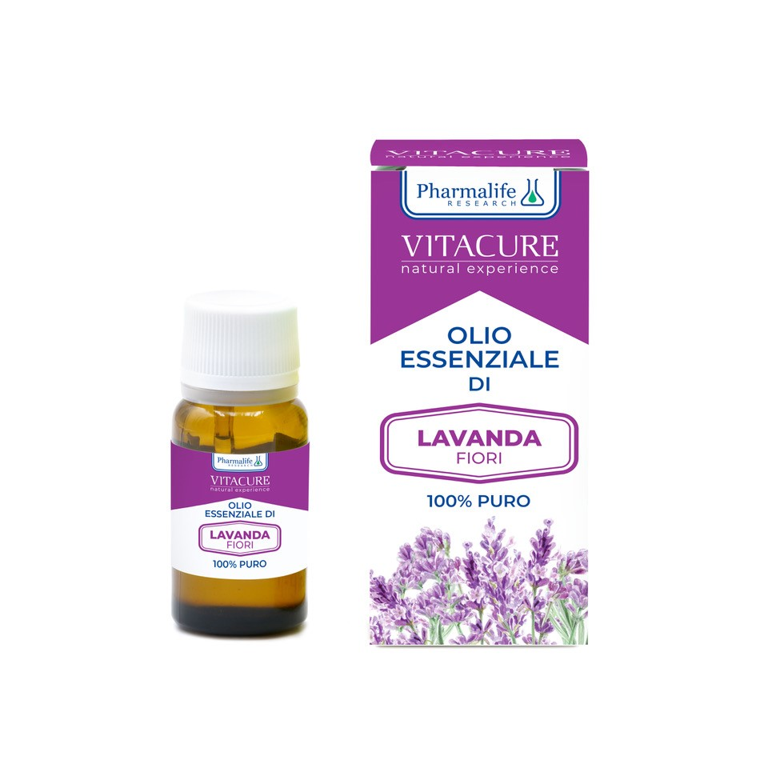

VITACURE · PHARMALIFE RESEARCH
Eucalipto
8,90 €
Eucalipto · foglie
Fresca e balsamica. Per caratteristiche, disponibilità e modalità d’uso, chiedi consiglio in erboristeria.
Chiedi informazioni su WhatsApp ↗Il nostro reparto botanico
Le essenze Vitacure di Pharmalife Research disponibili da Erbamedica Camnago. Sei profumi botanici da scoprire, con il consiglio della tua erboristeria.

Vitacure · Le essenze
Chiedici informazioni su disponibilità e caratteristiche di ogni prodotto.
VITACURE · PHARMALIFE RESEARCH
8,90 €
Eucalipto · foglie
Fresca e balsamica. Per caratteristiche, disponibilità e modalità d’uso, chiedi consiglio in erboristeria.
Chiedi informazioni su WhatsApp ↗VITACURE · PHARMALIFE RESEARCH
8,90 €
Menta · foglie
Fresca e vivace. Per caratteristiche, disponibilità e modalità d’uso, chiedi consiglio in erboristeria.
Chiedi informazioni su WhatsApp ↗VITACURE · PHARMALIFE RESEARCH
9,90 €
Rosmarino · foglie
Erbacea e aromatica. Per caratteristiche, disponibilità e modalità d’uso, chiedi consiglio in erboristeria.
Chiedi informazioni su WhatsApp ↗VITACURE · PHARMALIFE RESEARCH
12,00 €
Lavanda · fiori
Floreale e delicata. Per caratteristiche, disponibilità e modalità d’uso, chiedi consiglio in erboristeria.
Chiedi informazioni su WhatsApp ↗VITACURE · PHARMALIFE RESEARCH
8,90 €
Arancio dolce · scorze
Dolce e agrumata. Per caratteristiche, disponibilità e modalità d’uso, chiedi consiglio in erboristeria.
Chiedi informazioni su WhatsApp ↗VITACURE · PHARMALIFE RESEARCH
8,90 €
Limone · scorze
Frizzante e agrumata. Per caratteristiche, disponibilità e modalità d’uso, chiedi consiglio in erboristeria.
Chiedi informazioni su WhatsApp ↗